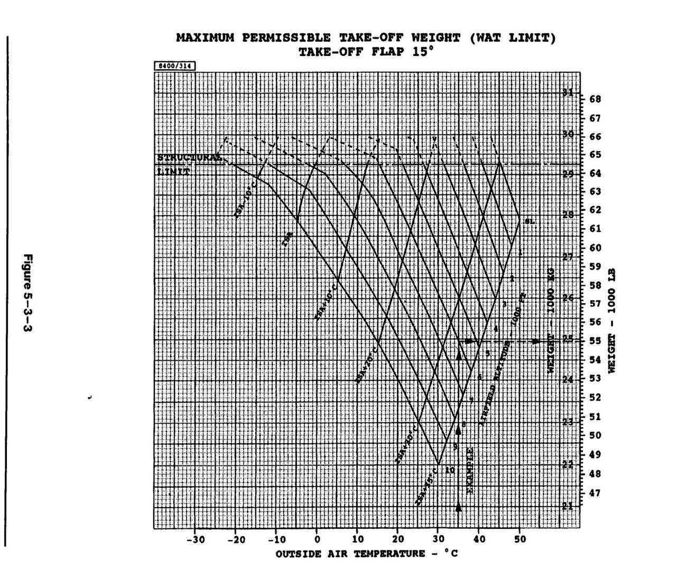

Lesson 3 of 8 — Take-off Weight Limits — the WAT Limit
Lesson 03: Take-off Weight Limits — the WAT Limit
Learning objectives
- List the factors that can limit the take-off weight.
- Explain the WAT (weight–altitude–temperature) limit.
- Read the maximum permissible take-off weight chart.
Is the aircraft WAT limited?
What can limit the take-off weight?
- The structural maximum take-off weight.
- The WAT limit — climb performance with one engine inoperative.
- The field lengths: take-off run, take-off distance, accelerate-stop distance.
- Obstacles in the take-off flight path (runway analysis).
- Brake energy, the landing weight at destination (plus trip fuel), and MEL/CDL penalties.
The WAT limit
The WAT limit is the maximum permissible take-off weight for the aerodrome altitude and temperature that still gives the minimum climb gradients with one engine inoperative (second segment 2.4 %, final segment 1.2 % gross for a twin — CS 25.121). It does not depend on runway length: on a hot, high aerodrome the aeroplane can be WAT-limited on a very long runway.

Exercise approach
The type-rating exercise plans a departure from a short runway (Toronto City Centre, runway 08: elevation 251 ft, 4,000 ft, no clearway or stopway, slope −0.02 %). The questions to ask are always the same:
- What sources do I need? — AFM / runway analysis, weather, NOTAMs, aerodrome chart.
- What do I need about the airport? — elevation, runway length, slope, clearway, stopway, line-up allowance, obstacles.
- What weather affects the calculation? — OAT, QNH (pressure altitude), wind (head/tail and crosswind components), runway condition.
- What is the take-off torque? Is the aeroplane WAT-limited?
- What weight do the TOR, TOD and ASD allow?
Key takeaways
- The lowest of structural, WAT, field, obstacle, brake and landing limits applies.
- The WAT limit protects the one-engine-inoperative climb gradients.
- A long runway does not remove the WAT limit.
Knowledge check
What does the WAT limit protect?
Duration: 8 min